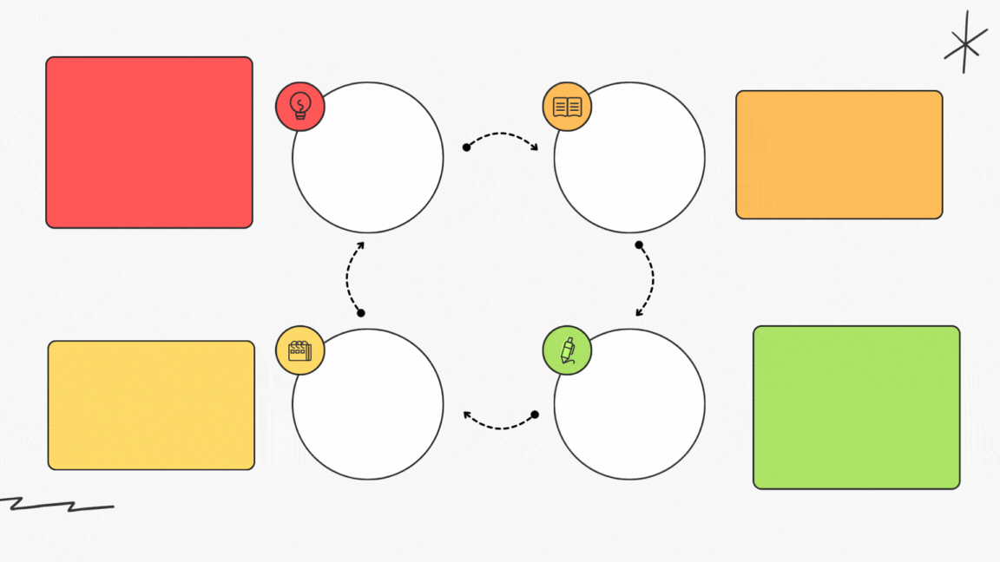

¿Qué es un discurso?
|
El discurso oral es cuando comunicamos usando la voz. En la educación es muy importante, porque permite explicar ideas, compartir conocimientos, hacer preguntas y participar en debates o discusiones. |
Tipos de análisis del discurso

Cómo utilizar el análisis del discurso
Análisis de los argumentos y su validez en el discurso
 |
¿Qué es un argumento dentro de un discurso? Un argumento es una razón para defender una idea. Sirve para convencer a otros. Tiene una afirmación (la idea) y una prueba o razón que la apoya. |
Tipos de argumentos
De hecho
Se basan en datos verificables o hechos comprobados.
Ejemplo: “Las temperaturas globales han aumentado un 1.5 °C en los últimos 50 años”.
De autoridad
Citan a expertos o fuentes confiables para respaldar una idea.
Ejemplo: “Según la OMS, la vacunación es crucial para prevenir enfermedades”.
Emocionales
Apelan a los sentimientos de la audiencia, buscando influir en sus emociones.
Ejemplo: “Debemos proteger nuestros bosques por el bien de nuestros hijos”.